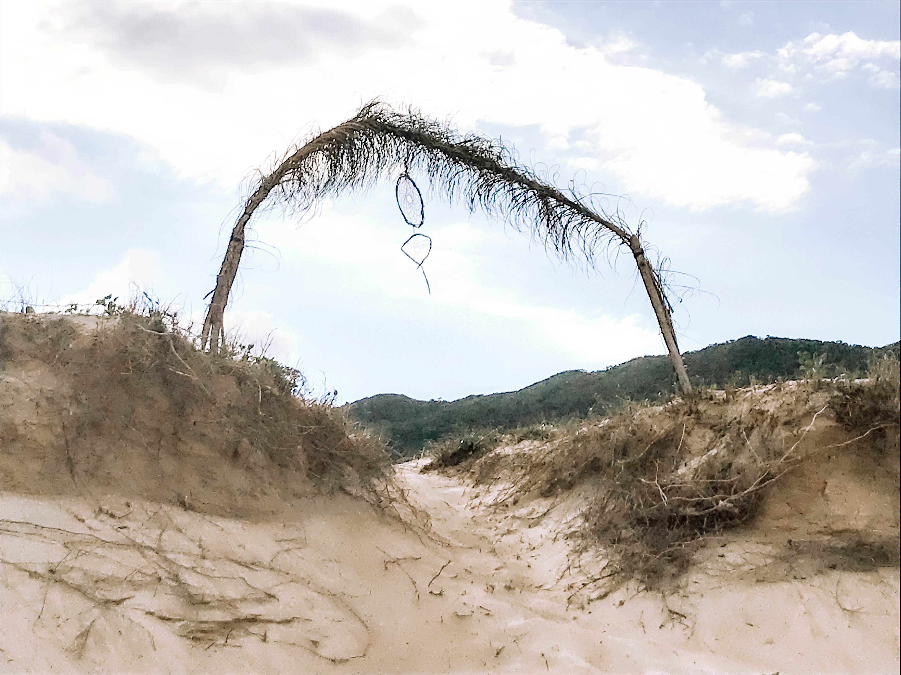
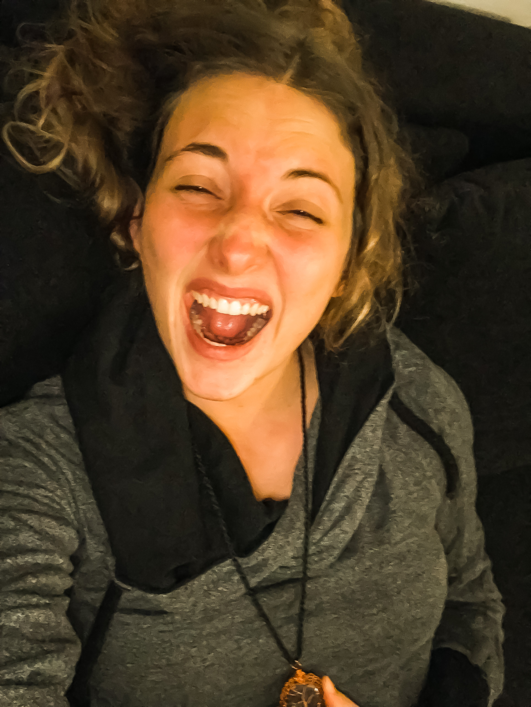

Surrender to Life
Apr 7, 2020 19:58 · 899 words · 5 minutes read

I feel a burning sensation in the center of my chest, at the same time as calmness is softly raining down on me. Making an effort to breath deeply brings ease.
Clarity, confusion, chaos, pain.
Knowingness, vibration, trust, love.
I commit to live this life fully.
I commit to express my truth.
I surrender to life force.
I bow to the divine.
My deepest committment is to follow the vibration of life force. What does that mean? I pause and listen to my body. Do I feel open, curious, expanded, excited, exuberant, awake? Or rather bored? My body knows the direction, it is the mind that comes in with fears and doubts and tends to throw me off.
Freeing my voice
Life is bringing me to my knees. So much is happening and all I can hear is my inner voice asking me to break the silence, stop hiding, acknowledge my fears and move through them. Take a leap. Surrender to my trust in life.
I notice myself waiting. Waiting for the perfect circumstances, the right people, something outside of myself. I understand that this waiting is pointless. I have to start exactly where I am. Right here, right now.
It is time that I use my voice. It feels scary and exciting at the same time. What if I will be pushed away, shamed or rejected? Yes, the human in me feels fear and it’s okay.
I’m tired of my role. It’s a role that doesn’t fit me anymore. The role of being the silent one who endures projections, misogyny and cruelty because I believed not to be worthy and not having the right to be heard. For many years, it was a useful mechanism for protection, but those days are over. I thank those parts of me and lovingly let them go to create space for something new.
I have a voice and I will use it. I don’t believe that I know better than others. I also believe in the value of sharing and listening to each other. Creating deep connections, finding compassion for different belief systems and calling out our blind spots from a place of love so we can grow and thrive. I feel humble, coming back to reflect on my words and actions again and again so that I can stay attentive to the parts that need to be transformed.
Old stories are dissolving, the pain transforming. It is time to bring myself into alignment with my mind, body, heart, soul and spirit. There is no space for compromises anymore.
Choosing connection, releasing separation
For all my life, I felt alone. Alone with the pain and struggles inside of myself and all the challenges I felt unable to navigate. Life has been changing and always will be. There is a way of coming together and showing ourselves in the essence of what is moving inside of us, releasing the story of separation and allowing all sensations to be there.
I know I am not alone and I never will be. Connection lives inside of me and all around. Nature, community, relationships, strangers passing on the streets. My body will always be here with me, living and feeling in the presence. The earth is holding me with all that is moving inside. There is one life force expressed through all, reminding us that we are a web of life.
I wish to live in a world where we are not afraid of connection, our wounding and our triggers. I know it’s possible. Every one of us has the ability to create a bit more of what we want to see in the world.
Sharing myself more
For the last few years, I have focused on absorbing transmissions from those around me. I know how powerful it is to share. Every seed is valuable, every word that moves you precious. I deeply believe that what we all need is more vulnerability and connection. Understanding that we’re not alone in our pain and grief.
I want to share more of myself. Why? For two reasons. First, because it serves my own well being to reflect about my journey and secondly, for the benefit of all who receive something through what I share. Resourcing myself first so that I can be in support and service to those around me.
I am aware that I will fail at times and that’s okay as long as I commit to bringing awareness and having the willingness to learn and change.
Final words… for now
I have a right to speak up. I commit to using my voice, expressing my needs and setting my boundaries. I surrender to be seen and heard in my vulnerability and power. I let go of the idea that I can please everyone.
Some of this won’t resonate with you and that’s okay. I invite you to tune in with what feels true and follow your inspiration and curiosity. Bring awareness to the places inside where you feel resistence and allow them to be there.
I am asking myself, how much can I welcome and accept all of myself and others, releasing the judgements I hold and my understanding of what is right or wrong.
Let’s come together and break through the old story of separation. We’re in this together. We can do this. I believe in you. I believe in myself. I believe in life.
